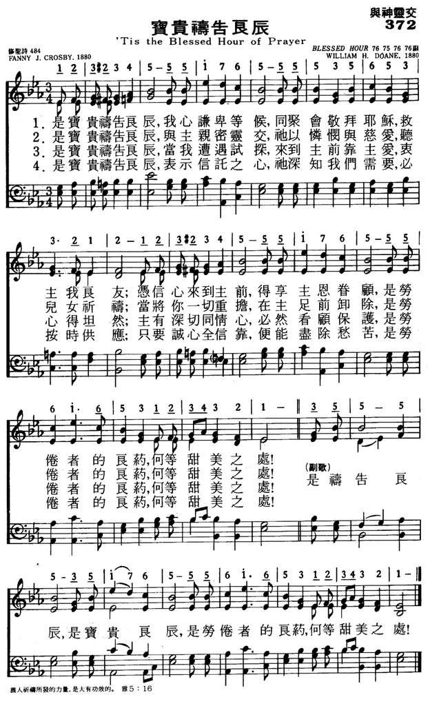

|
|
|
|
1 ’Tis the blessèd hour of prayer, when our hearts lowly bend, Refrain: 2 ’Tis the blessèd hour of prayer, when the Savior draws near, 3 ’Tis the blessèd hour of prayer, when the tempted and tried 4 At the blessèd hour of prayer, trusting Him we believe |
372宝贵祷告良辰
1.是宝贵祷告良辰，我心谦卑等候，
同聚会敬拜耶稣，救主我良友， 凭信心来到主前，得享主恩眷顾， 是劳倦者的良药，何等甜美之处。是祷告良辰， 是宝贵良辰，是劳倦者的良药，何等甜美之处。 2.是宝贵祷告良辰，与主亲密灵交， 他以怜悯与慈爱，听儿女祈祷， 当将你一切重担，在主足前卸除， 是劳倦者的良药，何等甜美之处。是祷告良辰， 是宝贵良辰，是劳倦者的良药，何等甜美之处。 3.是宝贵祷告良辰，当我遭遇试探， 来到主前靠主爱，衷心得坦然， 主有深切同情心，必然看顾保护， 是劳倦者的良药，何等甜美之处。是祷告良辰， 是宝贵良辰，是劳倦者的良药，何等甜美之处。 4.是宝贵祷告良辰，表示信托之心， 他深知我们需要，必按时供应， 只要诚心全信靠，便能尽除愁苦， 是劳倦者的良药，何等甜美之处。是祷告良辰， 是宝贵良辰，是劳倦者的良药，何等甜美之处。 |
|
https://www.mred365.cn/szxg/7375.html  https://hymnary.org/hymn/WASH1957/page/335
|
|
|
|
|

-

CD08-08-宝贵祷告良辰 https://www.youtube.com/watch?v=WHU22z6ZU5w -
赞美诗270: 宝贵祷告良辰 https://www.youtube.com/watch?v=DJrODslyGfc -
https://www.youtube.com/watch?v=ubM2g4YLD6o
LX1901
Tis The Blessed Hour Of
Prayer
372宝贵祷告良辰
| Text: | Tis the Blessed Hour of Prayer |
| Author: | Fanny J. Crosby, 1820-1915 |
| Tune: | ['Tis the blessed hour of prayer] |
| Composer: | William H. Doane, 1832-1915 |


’Tis the Blessed Hour of Prayer hymnologyarchive
I. Origins
Even though Fanny Crosby (1820–1915) did not formally address the composition of this hymn, she did describe the important role of prayer in her life and in her craft. She once described her grandmother as being formative in that area:
My grandmother was a woman of exemplary piety; and from her I learned many useful and abiding lessons. She was a firm believer in prayer; and, when I was very young, taught me to believe that our Father in Heaven will always give us whatever is for our good; and therefore that we should be careful not to ask him anything that is not consistent with His Holy Will. At evening-time she used to call me to her dear old rocking chair; then we would kneel down together and repeat some simple petition.[1]
Elsewhere, she described part of her process of writing hymns, especially when expected to write on demand or on a schedule:
So what would I do, if it were necessary or highly desirable that a hymn be written on a certain day or night: as, for some occasion, or some work soon to be published? If I were not in the mood to write, I would build a mood—or try to draw one around me. I should sit alone, as I have done on many a day or night, praying God to give me the thoughts and the feelings wherewith to compose my hymn. After a time—perhaps not unmingled with struggle—the ideas would come, and I would soon be happy in my verse.
It may seem a little old-fashioned, always to begin one’s work in prayer: but I never undertake a hymn without first asking the good Lord to be my inspiration in the work that I am about to do.[2]
Fanny Crosby wrote “’Tis the blessed hour of prayer” in 1880, and it was set to music by one of her most trusted collaborators, William Howard Doane (1832–1915), or sometimes Doane would write a melody first, and Crosby would create words for it. Her professional relationship with Doane has been expressed in the stories behind “Draw Me Nearer” and “To God Be the Glory.” This hymn was first published in Good As Gold (NY: Biglow & Main, 1880). The tune is usually called BLESSED HOUR.
Fig. 1. Good As Gold (NY: Biglow & Main, 1880).
II. Analysis
The hymn was originally published in four stanzas of four lines, with a recurring fifth line (“What a balm for the weary! O how sweet to be there!”). The stanzas have an interesting ABBAA rhyme scheme. The chorus adds only four bars of new musical material and only one phrase of extra text, before returning to the same recurring line at the end of the stanzas. The D.S. ending, as a compositional device, is fairly common in gospel hymns. Musically, it stays within the gospel template, using some dotted rhythms and basic harmonies (I–IV–V). It has a secondary dominant chord leading to a half cadence in the middle of the stanzas, and the melody stays within an octave, tonic to tonic.
The original printing was headed with Acts 3:1, “Now Peter and John were going up to the temple at the hour of prayer, the ninth hour,” an appropriate reference, but the hymn itself was probably more directly related to Fanny Crosby’s experiences taking part in prayer meetings at her home church, the Old John Street Methodist Episcopal Church in New York City, and elsewhere. The text is rendered in first person plural, speaking of a gathering, and saying “O how sweet to be there!” Compare this to another classic hymn, “Sweet hour of prayer,” which is in first person singular and could refer to a private ritual.
The first stanza mentions asking in faith, an important facet of effective prayer given in Matthew 21:22 and James 1:6. The recurring line is consistent with the assurance given in Isaiah 40:28–31, which says the God who is never weary will renew the strength of his people. The second stanza says the Lord is compassionate (Psalm 86:15 and elsewhere), and it uses words from 1 Peter 5:7 (“Casting all your care upon him”). Relating to the third stanza, Hebrews 4:15 speaks of a Savior who is able to sympathize with human weakness because he himself was tempted. The final stanza relates closely to the prayer of belief in Mark 11:24 (“Therefore I tell you, whatever you ask in prayer, believe that you have received it, and it will be yours”).
Pastor and devotional writer Robert Cottrill summarized the hymn in this manner:
Could there be a more tender and lovely hymn, about the blessing awaiting God’s people at Prayer Meeting? It certainly captures something of the spirit of the occasion. Expressed in it, there is a love for the Lord, a concern for one another, and a delight in the opportunity to pray together.[3]
by CHRIS FENNER
for Hymnology Archive
23 September 2020
Footnotes:
-
Fanny Crosby, Memories of Eighty Years (Boston: J.H. Earle, 1906), p. 12: Archive.org
-
Fanny Crosby, Fanny Crosby’s Life Story (NY: Every Where, 1903), pp. 124–125: Archive.org
-
Robert Cottrill, “’Tis the blessed hour of prayer,” Wordwise Hymns (10 June 2011): https://wordwisehymns.com/2011/06/10/tis-the-blessed-hour-of-prayer/
Related Resources:
“Tis the blessed hour of prayer,” Hymnary.org: https://hymnary.org/text/tis_the_blessed_hour_of_prayer
"’TIS THE BLESSED HOUR OF PRAYER"
"Peter and John went up together…at the hour of prayer…" (Acts
3.1)
INTRO.:
A gospel song which encourages us to go to God in prayer is "’Tis The Blessed Hour Of Prayer" (#95 in Hymns for Worship Revised, and #24 in Sacred Selections for the Church). The text was written by Frances (Fanny) Jane Crosby VanAlstyne, better known as Fanny J. Crosby (1820-1915). The tune (Blessed Hour) was composed by William Howard Doane (1832-1915). The song first appeared in Good As Gold, a Sunday school collection compiled in 1880 for Biglow and Main by Doane and Robert Lowry (1826-1899).
Among songbooks published by members of the Lord’s church during the twentieth
century for use in churches of Christ, the song is appeared in the 1921 Great
Songs of the Church (No. 1), and the 1937 Great
Songs of the Church No. 2 both edited by E. L. Jorgenson; the
1935 Christian
Hymns (No. 1), the 1948 Christian
Hymns No. 2, and the 1966 Christian
Hymns No. 3 all edited by L. O. Sanderson; the 1963 Abiding
Hymns edited by Robert C. Welch; and the 1963 Christian
Hymnal edited by J. Nelson Slater. Today, it may be
found in the 1971 Songs
of the Church, the 1990 Songs
of the Church 21st C. Ed., and the 1994 Songs
of Faith and Praise all edited by Alton H. Howard; the
1978/1983 (Church)
Gospel Songs and Hymns edited by V. E. Howard; the 1986 Great
Songs Revised edited by Forrest M. McCann; and the 1992 Praise
for the Lord edited by John P. Wiegand; in addition to Hymns
for Worship and Sacred
Selections.
The song mentions several aspects of prayer and its
importance to us.
I. Stanza one says that prayer is an expression of faith
"’Tis the blessed hour of prayer, when our hearts lowly bend
And we gather to Jesus, our Savior and friend;
If we come to Him in faith, His protection to share,
What a balm for the weary! O how sweet to be there!"
A. Some object to the term "hour of prayer," saying that under the New Law we
do not have specific hours of prayer, as apparently developed among the Jews
under the Old Covenant, but can pray at any time. However, we can understand the
concept of the "hour of prayer" as referring to any time when we choose to pray:
Matt. 6.6
B. Jesus Christ is both our friend and our Mediator through whom we go to the
Father in prayer: Jn. 15.14-15, 1 Tim 2.5
C. But to be confident that God will hear and answer our prayers, we must come
to Him in faith: Jas. 1.5-6
II. Stanza two says that prayer is a communion with the Savior
"’Tis the blessed hour of prayer, when the Savior draws near,
With a tender compassion His children to hear;
When He tells us we may cast at His feet every care,
What a balm for the weary! O how sweet to be there!"
A. Prayer is one of those blessings from God in which we can draw near to God
and He draw near to us: Jas. 4.8
B. We can have assurance that God will hear us because of His compassion upon
us as His children, as demonstrated by the compassion of Christ on earth: Matt.
9.36, 14.14
C. And because of His compassion, He tells us to cast all our cares on Him: 1
Pet. 5.7
III. Stanza three says that prayer is a haven in time of temptation or trial
"’Tis the blessed hour of prayer, when the tempted and tried
To the Savior who loves them their sorrow confide;
With a sympathizing heart He removes every care;
What a balm for the weary! O how sweet to be there!"
A. All of God’s people find themselves tempted and tried from time to time:
Jas. 1.2-3, 12
B. But during all our temptations and trials we can know that we have a Savior
who loves us: Rom. 8.31-39
C. And because He has a sympathizing heart, we can go to God through Him in
prayer and ask His help to remove every care: 1 Cor. 10.13, Heb. 4.14-16
IV. Stanza four says that prayer is a result of our complete trust in God
"’Tis the blessed hour of prayer, trusting Him, we believe
That the blessing we’re needing we’ll surely receive;
In the fullness of this trust we shall lose every care,
What a balm for the weary! O how sweet to be there!"
A. Certainly, the Bible teaches that we should put our complete trust in God:
Psa. 37.3, Prov. 3.5
B. Because of our trust in Him, we can be persuaded that the blessings which we
need we shall receive from Him: Matt. 7.7-12
C. And in the fullness of this trust, we can lose every care by casting our
burdens on the Lord: Psa. 55.22
CONCL.:
The chorus reminds us that the hour of prayer is certainly blessed and sweet
because, like the balm of Gilead, it is a balm for the weary (Jer. 8.22, 16.11).
"Blessed hour of prayer, blessed hour of prayer,
What a balm for the weary! O how sweet to be there."
Whenever we choose to go to God in prayer through our Mediator Jesus Christ, we
can say, "’Tis The Blessed Hour Of Prayer."
Words: Frances Jane (“Fanny”) Crosby (b. Mar. 24, 1820;
d. Feb. 12, 1915)
Music: William Howard Doane (b. Feb. 3, 1832; d. Dec. 23,
1915)
Links:
Wordwise Hymns
The Cyber
Hymnal
Could there be a more tender and lovely hymn, about the blessing awaiting God’s people at Prayer Meeting? It certainly captures something of the spirit of the occasion. Expressed in it, there is a love for the Lord, a concern for one another, and a delight in the opportunity to pray together.
Forms of the word “pray” are used in our English Bibles over 340 times (excluding the old English expression of the KJV, “I pray thee”–which is addressed to human beings). To this, of course, can be added other words such as, supplication, intercession, and confession, not to mention worship, thanksgiving and praise. From Genesis to Revelation (Gen. 20:7; Rev. 8:4), we read about prayer, and people praying. Often, they pray in private and alone, and it’s important to do that. But other times, we read of believers gathering for the purpose, and praying together (e.g. Acts 1:13-14; 12:12; 21:5).
Prayer unites the people of God. As we draw nearer to the Lord, we also draw nearer to one another. Praying for each other does that. Prayer also refocuses our lives. It helps us see the events of our days through the eyes of God. There is so much more that could be said about it. But among many other things:
Prayer is an expression of faith–which we all need. In fact, “without faith it is impossible to please Him, for he who comes to God must believe that He is, and that He is a rewarder of those who diligently seek Him” (Heb. 11:6). But, as Fanny Crosby puts it, “If we come to him in faith…what a balm for the weary!” (CH-1).
Prayer is fellowship with the Lord, “when we gather to Jesus, our Saviour and Friend” (CH-1). When we purposefully draw near to Him, He will draw near to us (Jas. 4:8). Assured of His concern, we can cast all our cares upon Him (I Pet. 5:7). As stanza CH-2 says:
’Tis the blessèd hour of prayer, when the Saviour draws near,
With a tender compassion His children to hear;
When He tells us we may cast at His feet every care,
What a balm for the weary, O how sweet to be there!
Prayer is a means of gaining needed help, as we draw upon the resources of heaven. The Bible says:
“We do not have a High Priest who cannot sympathize with our weaknesses, but was in all points tempted as we are, yet without sin. Let us therefore come boldly to the throne of grace, that we may obtain mercy and find grace to help in time of need” (Heb. 4:15-16).
This truth is brought out in CH-3. There is strength and comfort from the Lord, as we gather before His throne and seek His help. However, we might justly question the line, “With a sympathizing heart He removes every care.”
If the author means that God sooths our worries, then yes. The Lord encourages the troubled heart, as we entrust our burdens to Him (Phil. 4:6-7). But He doesn’t remove every practical problem from our lives. Though He may deliver us sometimes, on other occasions He gives us the grace to bear the burden. I think I would have used the word “relieves,” rather than “removes.”
Prayer enables us to live confidently. The promise is, “Ask, and it will be given to you” (Matt. 7:7). Of course, that verse cannot be taken in isolation from the Bible’s full teaching on prayer. “My God shall supply all your need according to His riches in glory by Christ Jesus” (Phil. 4:19). He meets our needs, not our greeds! When what we ask for is in accord with the will of God (I Jn. 5:14), and for the glory of God (Jn. 14:13), then we can have assurance that He will answer in a way that is for our best, and for His glory.
At the blessèd hour of prayer, trusting Him, we believe
That the blessing we’re needing we’ll surely receive;
In the fullness of the trust we shall lose every care;
What a balm for the weary, O how sweet to be there!
Questions:
1) If our local church prayer meeting is poorly attended, or seems a dry
matter of going through the motions, what can be done to improve things?
2) When, at times, our prayers seem to go unanswered, what are some possible reasons?
3) What are some possible blessings in unanswered prayers? (These may be prayers for which the Lord delays an answer, or perhaps answers in another way than we expected.)
Links:
Wordwise Hymns
The Cyber
Hymnal